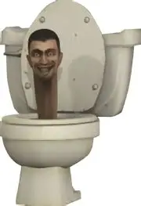

New website test voor de eerste keer.
Ik hou van skibidi toilet en ohio rizz gyatt.
skibidi
hallo jaimy
gracy is skibidi
The Skibidi Toilet universe depicts a surreal but internally consistent war between two factions: the Skibidi Toilets—parasitic creatures with human heads protruding from toilets—and the Cameramen, humanoid androids equipped with advanced technology. By Episode 50, the conflict has escalated into a multi-front war full of betrayals, experiments, power-ups, and tactical evolutions. The Skibidi Toilets seem to emerge from nowhere, appearing as self-propelled toilet bodies with human heads lodged inside. Their origins are never explained, giving the sense of a sudden parasitic outbreak overrunning cities. They reproduce quickly, attack through biting or spraying corrosive liquids, and can infect or convert humans. Their erratic movement and rapid multiplication make them terrifying. In response to the outbreak, the Camera People arise as defenders of humanity, robotic soldiers with camera heads and a disciplined military structure. They wield electrical weapons, resist Skibidi mind control, and operate tactically compared to the chaotic Toilets. They are later joined by TV Men, who use hypnotic screens, and Speakermen, who use sonic attacks. In the early episodes, the Cameramen are overwhelmed because the Toilets outnumber them. The most common Toilets are small and individually weak, but they ambush Cameramen and swarm them. The Cameramen attempt to develop technology such as shock batons, energy rifles, and early mechs, but these barely slow the Toilets. During this time, the Titan Cameraman is first teased in development, foreshadowing a coming shift in power. As the series progresses into the mid-episodes, both sides dramatically evolve. The Skibidi Toilets begin mutating into larger and more complex forms: giant Toilets capable of smashing through structures, spider and multi-head Toilets that gain speed and multi-directional attack abilities, flying drone Toilets that can scout or ambush, and disguised Toilets that hide in buildings or blend into environments. The war becomes as psychological as physical due to these bizarre ambushes. Meanwhile, the Cameramen receive reinforcements. The TV Men join the alliance, able to hypnotize Toilets or emit confusion waves, making them ideal for controlling crowds. The Speakermen join as well, using sonic cannons and resonance blasts to disable Toilets or disrupt their music-based communication. They become frontline shock troopers. A major turning point occurs when the Titan Cameraman finally becomes fully operational. Equipped with missile launchers, arm cannons, high-output lasers, and heavy plating, he shifts the balance of power, mowing through even the larger Toilets. The Skibidi Toilets respond by unveiling their own Titan Toilet, a massive armored creature with energy beams and enormous durability. The two Titans become the central forces of their respective sides, clashing in massive battles. Eventually, the war deepens into a more strategic and sinister phase. The Skibidi Toilets unleash infection beams capable of corrupting Speakermen. Many of the Speakermen are captured and brainwashed, turning them against the alliance. This becomes one of the Cameramen’s most devastating losses, and the sight of corrupted Speakermen attacking their former allies marks a grim turning point. The Cameramen adapt again, upgrading their soldiers with backpack power supplies, extended-range weapons, and electrical shielding. They begin producing elite units like snipers, heavy melee troopers, and jetpack-equipped soldiers. Their army becomes far more sophisticated than the early resistance. At the same time, the Toilets grow more grotesque, using biological manipulation and creating multi-toilet fusion monsters. Large-brained Toilets emerge with psychic abilities, telekinesis, and the power to command lesser Toilets. These become some of the most dangerous enemies yet. As Episode 50 approaches, multiple storylines converge. The Titan Cameraman becomes weakened from repeated battles and infection-based ambushes, and the alliance works to keep him repaired. Hints appear of a Titan Speakerman under construction, though not yet deployed. The TV Men begin launching coordinated, large-scale stuns and hypnosis attacks to neutralize huge numbers of Toilets. Meanwhile, the Skibidi Toilets develop new overlord variants with heavy armor, multiple heads, and parasite beams, capable of matching elite Cameramen squads. By Episode 50, the war reaches a moment of near-symmetry. Neither side holds a clear advantage: the Cameramen rely on technology and discipline, while the Toilets rely on mutations and hive-mind adaptability. The tension is immense, and the series ends this stage of the story with the sense that the next evolution from either faction will determine the fate of the entire conflict.